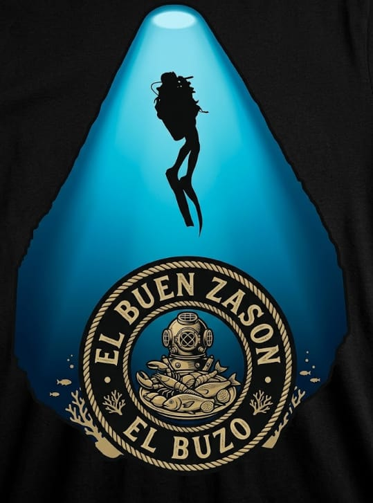

Favorito de la casa
Mojarra frita
Entera, dorada y crujiente. Con tostones, ensalada y la salsa que nadie quiere dejar.
Se me antojó00m
Descendiendo al buen sazón
Palapa Familiar · Jonuta, Tabasco
Mariscos y pescados con auténtico sabor tabasqueño, preparados al momento en una palapa donde la familia siempre tiene lugar en la mesa.
Hoy se antoja
El buen sazón no se explica
Nuestra historia
El mar enseña que lo bueno no tiene prisa. Cada preparación se cuida desde el primer corte hasta que llega a tu mesa.
Mariscos elegidos con ojo de buzo: firmes, brillantes y con ese sabor limpio a mar que no se disimula.
Fritos, a las brasas o al ajillo: pescados preparados al momento, con el sazón tabasqueño que nos distingue.
Platillos de la casa
Una selección de lo que más se antoja en la palapa. Desliza y elige el tuyo.
Entera, dorada y crujiente. Con tostones, ensalada y la salsa que nadie quiere dejar.
Se me antojóCamarón, aguacate y pepino en su jugo. Fresco desde el primer trago.
Lo quiero yaAjo dorado, mantequilla y un toque de guajillo. Imposible comer solo uno.
Quiero probarlosPara las ocasiones que merecen un brindis. Pregunta por la pieza del día.
Reservar la míaCamarón, pulpo, pescado y más. La mesa grande se merece una cazuela grande.
Pedirla para todosLimón, cebolla morada, chile y cilantro. El equilibrio perfecto entre ácido y mar.
Clic aquí y a comerCamarón crudo, camarón cocido y callo de hacha en su aguachile. Llega a la mesa en molcajete.
Quiero el molcajeteCamarón curtido con pepino, cebolla morada y aguacate sobre tostada crujiente.
Pedir mis tostadasTortillas en capas con frijol negro y cazón, bañadas en salsa de jitomate.
Se me antojaArroz caldoso con camarón, jaiba y pescado en un guiso de jitomate y chile.
Pedirlo calienteLa palapa
Ven con quien más quieres. Aquí se come despacio, se brinda fuerte y siempre cabe uno más.
Llévame a la palapaLa experiencia
Cada visita está pensada para que te quedes un rato más: buen sabor, buen ambiente y buena compañía.
Techo de palma, brisa fresca y un rincón para cada plan. Aquí el tiempo se mide en sobremesas.
Recetas con identidad: la sazón y los ingredientes de la región, sin disfraces.

Comidas familiares, cumpleaños y reuniones con amigos. Siempre cabe uno más.
Mariscos y pescados que se preparan cuando los pides, no antes.
¿Hay algo que celebrar?
Tu visita
Llena el formulario en menos de un minuto: fecha, hora y número de personas.
Te respondemos para apartar tu mesa y resolver cualquier duda sobre el menú.
Tu mesa estará lista. Tú solo decide qué se te antoja primero.
Antes de venir
¿Te quedó otra duda? Escríbenos y te respondemos en cuanto veamos tu mensaje.
Preguntar por WhatsAppEstamos en Jonuta, Tabasco. En la sección de reservaciones encontrarás el botón “Cómo llegar” que abre la ruta directo en tu mapa.
Llena el formulario de esta página y te llevamos directo a WhatsApp con tu solicitud lista. Ahí mismo confirmamos tu mesa.
Mariscos y pescados con sabor tabasqueño: cocteles, ceviches, pescados fritos o a las brasas, camarones, pulpo, langosta y mucho más.
La palapa está pensada para compartir. Cuéntanos cuántos son y cuál es la ocasión para preparar tu mesa con anticipación.
Escríbenos por WhatsApp y te confirmamos disponibilidad y tiempos de entrega de tu pedido.
Reservaciones
Cuéntanos cuántos son y cuándo vienen. Te escribimos por WhatsApp para confirmar tu mesa. Sin pagos, sin registros, sin complicaciones.
Estamos abriendo WhatsApp con tu solicitud. Si no se abre, toca el botón.
Abrir WhatsApp